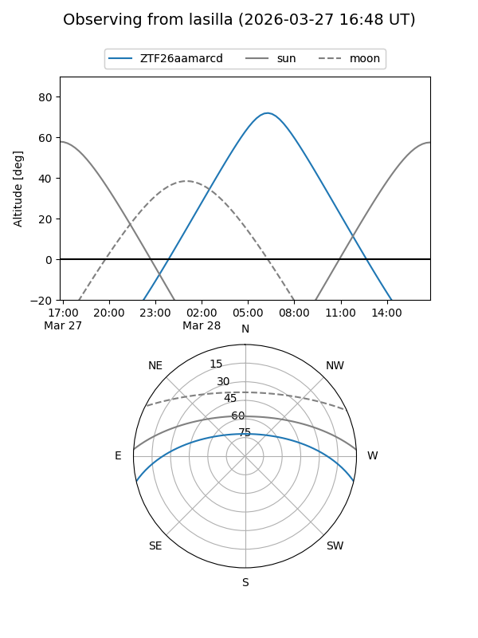
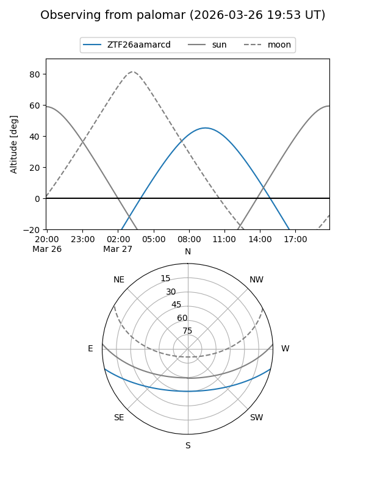

ZTF26aamarcd
Target ZTF26aamarcd at 2026-03-27 11:18
Aliases and brokers:
FINK: link
Lasair: link
ALeRCE: link
alt names
ZTF26aamarcd (ztf,fink_ztf)
Coordinates:
equatorial (ra, dec) = 208.5164,-11.18102
equatorial (HMS+DMS) = 13:54:03.94,-11:10:51.69
galactic (l, b) = (326.6256,+48.78824)
Flags:
Photometry:
last ztfg=17.35
1 ztfg detections
Lightcurve
Visibility


Additional plots